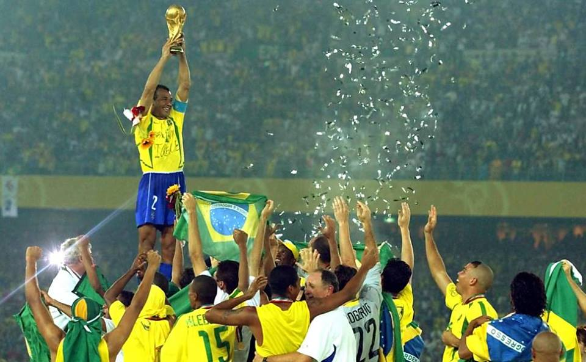

Futebol
O futebol é o esporte mais popular do mundo e suas origens remontam há 5 mil anos na China. O futebol moderno surgiu na Inglaterra durante o século XIX.

O futebol é considerado o esporte coletivo mais popular do mundo. O futebol é o esporte coletivo mais popular do planeta. Segundo dados da Federação Internacional de Futebol (Fifa), cerca de 270 milhões de pessoas atuam em atividades diretamente relacionadas ao esporte (seja como jogador, seja como árbitro)
O futebol moderno surgiu na Inglaterra durante o século XIX, mas relatos históricos apontam que já existiam práticas esportivas parecidas.
Atualmente, grandes competições de futebol são organizadas todos os anos por diferentes entidades futebolísticas (nacionais, continentais ou internacionais). E o esporte popularizado entre as massas de trabalhadores pobres é um segmento bilionário que movimenta muito dinheiro e move interesses políticos mundo afora
. Top 5 jogadores da atualidade:
| Nome | País | Classifição | Time |
|---|---|---|---|
| Robert Lewandowski | Polônia | Top1 | Barcelona |
| Lionel Messi | Argentina | Top2 | PSG |
| Mohamed Salah | Egito | Top3 | liverpool |
| Karim Benzema | França | Top4 | Real Madrid |
| Jorginho | Brasileiro | Top5 | Chelsea |
Futebol na história
Como vimos, o futebol moderno surgiu apenas no século XIX, mas sabe-se que milhares de anos atrás já eram praticados pela humanidade esportes com características semelhantes. O vestígio de prática similar ao futebol mais antigo do qual se tem conhecimento remonta à China de 3000 a.C.
Mas os registros históricos não remetem apenas aos chineses. Existem evidências de esportes semelhantes ao futebol sendo praticado por japoneses, egípcios, além de gregos e romanos antigos. Também há registros em diferentes povos mesoamericanos (da região da Mesoamérica, atual México e América Central).
Eduardo Galeano traz relatos de algo parecido com o futebol sendo praticado na Inglaterra durante a Idade Média. O jornalista uruguaio destaca que, no século XIV, o rei Eduardo II condenava essa prática esportiva. Outros reis ingleses como Eduardo III, Henrique IV e Henrique VI chegaram a proibir a prática do esporte Alguns séculos depois, ainda na Inglaterra, surgiria o futebol moderno. Isso ocorreu a partir da junção de clubes que não aceitavam determinadas regras da prática do rugby e decidiram unir-se para criar outro esporte, no qual não se conduzisse a bola com as mãos. As regras deste novo esporte, o futebol, foram estabelecidas em 1846 pela Universidade de Cambridge.
As primeiras normas ainda estavam em um estágio extremamente embrionário e apresentavam algumas diferenças em relação ao futebol praticado atualmente. Galeano aponta que as regras estabelecidas inicialmente para o futebol “não limitavam o número de jogadores, nem a extensão do campo, nem a altura do arco, nem a duração das partidas”.|3|
Naturalmente, uma série de mudanças foram sendo realizadas ao longo do século XIX, como a introdução do goleiro e do árbitro, a criação do pênalti para as faltas cometidas dentro da área, além da utilização das mãos para a cobrança do lateral. O crescimento do esporte e sua disseminação pela Europa levaram ao surgimento da Federação Internacional de Futebol (Fifa), que contava inicialmente com as seguintes nações:
- Bélgica
- Dinamarca
- França
- Holanda
- Espanha
- Suécia
- Suíça.
Uma importante observação é que a Fifa considera como data oficial do surgimento do futebol o ano de 1863, quando foi fundada na Inglaterra The Football Association, a organização responsável pela gestão do futebol naquele país.
Regras básicas do futebol
O futebol é um esporte cujo campo de grama apresenta 105 metros de comprimento por 68 metros de largura, uma padronização da Fifa. Duas equipes compostas por 11 jogadores disputam uma partida em que o objetivo é marcar o máximo possível de gols. Jogadas violentas podem ser punidas com cartões amarelo (serve como advertência) e vermelho (expulsão do jogador), e somente o goleiro pode usar as mãos durante a partida. Faltas cometidas dentro da área são punidas com a marcação de pênalti (cobrança feita de uma marca que fica a 11 metros do gol).
As partidas duram 90 minutos (divididos em dois tempos de 45 minutos), e as pausas são repostas com acréscimos determinados pelo árbitro. Em disputas eliminatórias, comumente conhecidas como mata-mata, se o jogo estiver empatado é realizada a prorrogação, composta por 30 minutos (divididos em dois tempos de 15 minutos). Caso a disputa permaneça empatada, haverá cobrança de pênaltis para definição do vencedor.